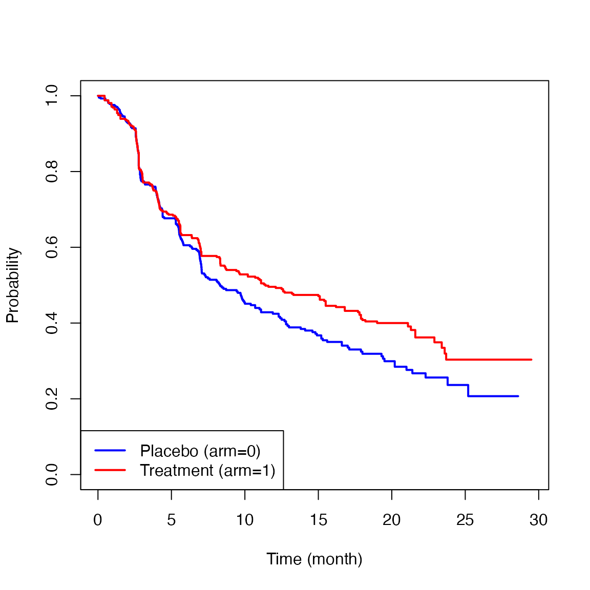
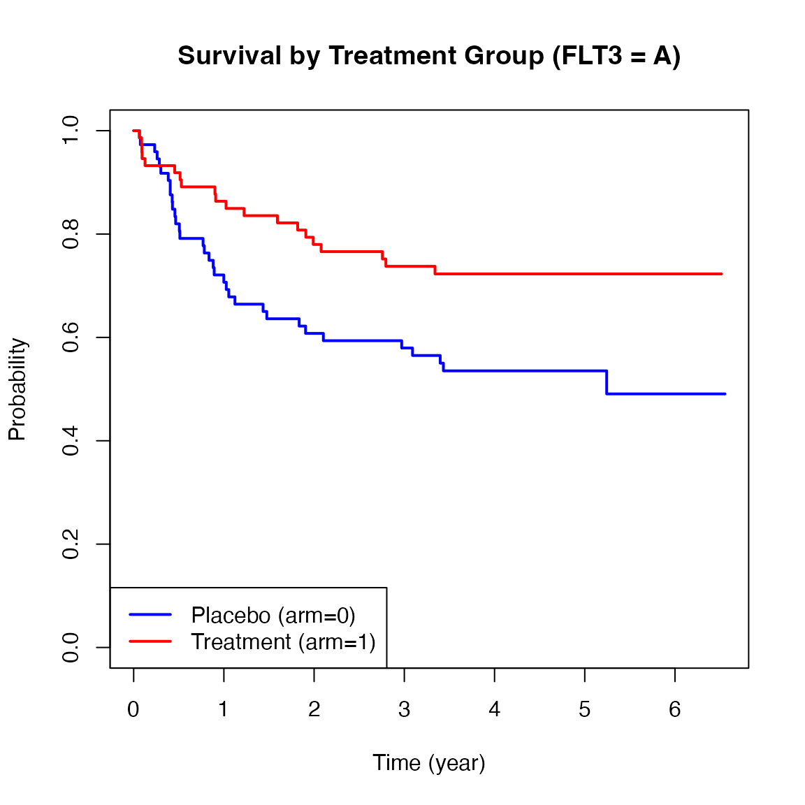
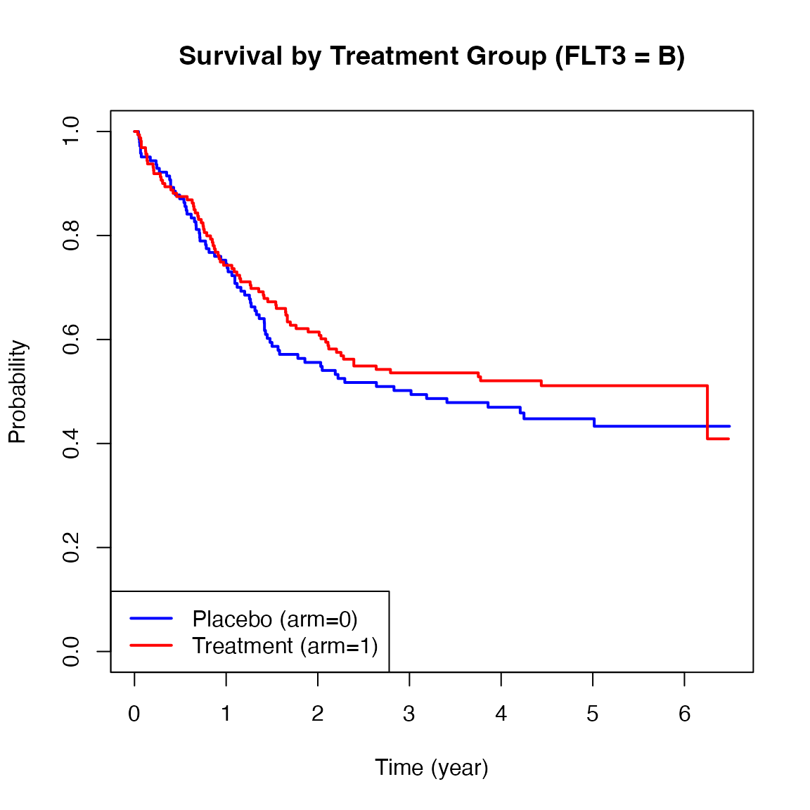
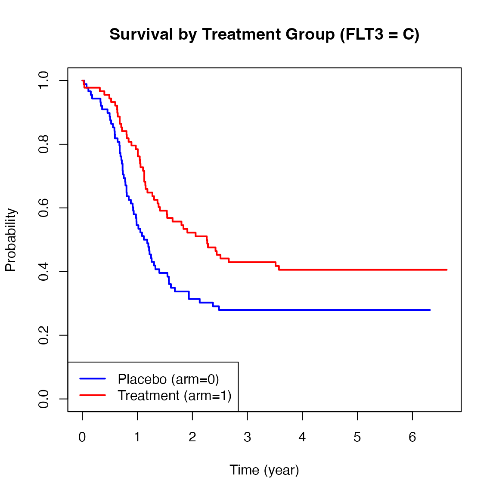

Vignette for survAH package
Hajime Uno1, Miki Horiguchi2, Zihan Qian3
June 15, 2025
vignette-survAH.Rmd1 Introduction
An important objective of clinical research investigating the safety and efficacy of a new intervention is to provide quantitative information about the intervention effect on clinical outcomes. Such quantitative information is critical for informed treatment decision making to balance the risks and benefits of the new intervention. In those studies where time-to-event outcomes are clinical endpoints of interest, the traditional Cox’s hazard ratio (HR) has been used for estimating and reporting the treatment effect magnitude for many decades. However, this traditional approach may not have provided the sufficient quantitative information that is needed for informed decision making in clinical practice for the following reasons. First, this approach does not require calculating the absolute hazard in each group in order to calculate the HR, which is a desirable feature from a statistical point of view, but which makes the clinical interpretation difficult. From the clinical point of view, the two numbers from the treatment and control groups are necessary for interpreting a between-group contrast measure (e.g., difference or ratio). Second, if the proportional hazards assumption is not correct, the interpretation of HR is not obvious because it is affected by the underlying study-specific censoring time distribution.[1,2]
The average hazard with survival weight (AHSW), which can be interpreted as the general censoring-free incidence rate (CFIR), is a summary measure of the event time distribution and does not depend on the underlying study-specific censoring time distribution. The approach using AHSW (or CFIR) provides two numbers from the treatment and control groups and allows us to summarize the treatment effect magnitude in both absolute and relative terms, which would enhance the clinical interpretation of the treatment effect on time-to-event outcomes.[3,4]
This vignette is a supplemental documentation for the survAH package and illustrates how to use the functions in the package to compare two groups with respect to the AHSW (or CFIR). The package was made and tested on R version 4.4.1.
2 Installation
Open the R or RStudio applications. Then, copy and paste either of the following scripts to the command line.
To install the package from the CRAN:
install.packages("survAH")To install the development version:
install.packages("devtools") #-- if the devtools package has not been installed
devtools::install_github("uno1lab/survAH")2 Sample Reconstructed Data
Throughout this vignette, we use sample reconstructed data of the CheckMate214 study reported by Motzer et al. [5] The data consists of 847 patients with previously untreated clear-cell advanced renal-cell carcinoma; 425 for the nivolumab plus ipilimumab group (treatment) and 422 for the sunitinib group (control).
The sample reconstructed data of the CheckMate214 study is available on survAH package as cm214_pfs. To load the data, copy and paste the following scripts to the command line.
library(survAH)
nrow(cm214_pfs)
#> [1] 847
head(cm214_pfs)
#> time status arm
#> 1 0.451 1 1
#> 2 0.451 1 1
#> 3 0.451 1 1
#> 4 0.451 1 1
#> 5 0.451 1 1
#> 6 0.710 1 1Here, time is months from the registration to progression-free survival (PFS), status is the indicator of the event (1: event, 0: censor), and arm is the treatment assignment indicator (1: Treatment group, 0: Control group).
Below are the Kaplan-Meier estimates for the PFS for each treatment group.

The two survival curves showed similar trajectories up to six months, but after that, a difference appeared between the two groups. This is the so-called delayed difference pattern often seen in immunotherapy trials. The HR based on the traditional Cox’s method was 0.82 (0.95CI: 0.68 to 0.99, p-value=0.037). Since the validity of the proportional hazards assumption was not clear in this study, there is no clear interpretation on the reported HR. Even if the proportional hazards assumption seemed to be reasonable, the lack of a group-specific absolute value regarding hazard makes the clinical interpretation of the treatment effect difficult. For example, if the baseline absolute hazard is very low, the reported HR (0.82) may indicate a clinically ignorable treatment effect magnitude. If it is high, even an HR that is closer to 1 (e.g., 0.98) may indicate a clinically significant treatment effect magnitude.
3 Average Hazard with Survival Weight (AHSW)
For a given \(\tau,\) a general form of the average hazard (AH) is denoted by \[ \eta(t) = \frac{\int_0^\tau h(u)w(u)du}{\int_0^\tau w(u)du},\] where \(h(t)\) and \(w(t)\) are the hazard function for the event time \(T,\) and a non-negative weight function, respectively. Let \(S(t)\) be the survival function for \(T.\) We use \(S(t)\) as the weight, which gives the AHSW \[ \eta(t) = \frac{\int_0^\tau h(u)S(u)du}{\int_0^\tau S(u)du}.\] The detailed motivation for using \(S(t)\) as \(w(t)\) was discussed in Uno and Horiguchi [3]. The AHSW has a clear interpretation as the average person-time incidence rate on a given time window \([0,\tau].\) It can also be called as the general censoring-free incidence rate (CFIR) in contrast to the conventional person-time incidence rate that potentially depends on an underlying study-specific censoring time distribution.
From now on, we simply call the AHSW (or CFIR) the average hazard (AH). The AH is denoted by the ratio of cumulative incidence probability and restricted mean survival time at \(\tau < \infty\): \[ \eta(\tau) = \frac{1-S(\tau)}{\int_0^\tau S(t)dt}.\]
Let \(\widehat{S}(t)\) denote the
Kaplan-Meier estimator for \(S(t).\) A
natural estimator for \(\eta(\tau)\) is
then given by
\[ \widehat{\eta}(\tau) =
\frac{1-\widehat{S}(\tau)}{\int_0^\tau {\widehat S} (t)dt}.\] The
large sample properties and a standard error formula of \(\widehat{\eta}(\tau)\) are given in Uno and
Horiguchi [3].
4 Two-sample comparison using AH and its implementation
Let \(\eta_{1}(\tau)\) and \(\eta_{0}(\tau)\) denote the AH for treatment group 1 and 0, respectively. Now, we compare the two survival curves, using the AH. Specifically, we consider the following two measures to capture the between-group contrast:
- Difference in AH (DAH) \[ \eta_{1}(\tau) - \eta_{0}(\tau) \]
- Ratio of AH (RAH) \[ \eta_{1}(\tau) / \eta_{0}(\tau) \]
These are estimated by simply replacing \(\eta_{1}(\tau)\) and \(\eta_{0}(\tau)\) by their empirical counterparts (i.e., \(\widehat{\eta_{1}}(\tau)\) and \(\widehat{\eta_{0}}(\tau)\), respectively). For the inference of the ratio type metrics, we use the delta method to calculate the standard error. Specifically, we consider \(\log \{ \widehat{\eta_{1}}(\tau)\}\) and \(\log \{ \widehat{\eta_{0}}(\tau)\}\) and calculate the standard error of log-AH. We then calculate a confidence interval for the log-ratio of AH, and transform it back to the original ratio scale; the detailed formula is given in [4].
The procedures below show how to use the function, ah2, to implement these analyses.
time = cm214_pfs$time
status = cm214_pfs$status
arm = cm214_pfs$arm
ah2(time=time, status=status, arm=arm, tau=21)The first argument (time) is the time-to-event vector variable. The second argument (status) is also a vector variable with the same length as time, each of the elements takes either 1 (if event) or 0 (if no event). The third argument (arm) is a vector variable to indicate the assigned treatment of each subject; the elements of this vector take either 1 (if the active treatment arm) or 0 (if the control arm). The fourth argument (tau) is a scalar value to specify the truncation time point \({\tau}\) for the AH calculation.
When \(\tau\) is not specified in ah2, (i.e., when the code looks like below)
ah2(time, status, arm)the default \(\tau\) (i.e., the maximum time point where the size of risk set for both groups remains at least 10) is used to calculate the AH. It is best to confirm that the size of the risk set is large enough at the specified \(\tau\) in each group to make sure the Kaplan-Meier estimates are stable.
The ah2 function returns AH on each group and the results of the between-group contrast measures listed above. Note that we chose 21 months for \(\tau\) in this example.
obj = ah2(time, status, arm, tau=21)
print(obj, digits=3)
#>
#> The time window: [eta, tau] = [0, 21] was specified.
#>
#> Number of observations:
#> Total N Event by tau Censor by tau At risk at tau
#> arm0 422 225 163 34
#> arm1 425 219 160 46
#>
#>
#> Average Hazard (AH) by arm:
#> Est. Lower 0.95 Upper 0.95
#> AH (arm0) 0.066 0.057 0.076
#> AH (arm1) 0.049 0.042 0.057
#>
#>
#> Between-group contrast:
#> Est. Lower 0.95 Upper 0.95 P-value
#> Ratio of AH (arm1/arm0) 0.747 0.608 0.917 0.005
#> Difference of AH (arm1-arm0) -0.017 -0.029 -0.005 0.006The estimated AHs were 0.049 (0.95CI: 0.042 to 0.057) and 0.066 (0.95CI: 0.057 to 0.076) for the treatment group and the control group, respectively. The ratio and difference of AH were 0.747 (0.95CI: 0.608 to 0.917, p-value=0.005) and -0.017 (0.95CI: -0.029 to -0.005, p-value=0.006), respectively.
5 Stratified analysis using the AH and its implementation
Stratified analysis is commonly used in clinical trials to adjust for imbalanced baseline characteristics or known prognostic factors. However, traditional stratified methods (e.g., Stratified Cox or CMH) assume homogeneous effects across strata, which may not hold in practice. To overcome this, we extend the AH framework to stratified settings using standardization[4]. This approach adjusts for stratification while preserving the interpretability of both absolute and relative treatment effects.
In this framework, treatment effects are summarized using the adjusted average hazard (AH), which is defined based on standardized survival curves across strata:
\[ \bar{S}_j(t) = \sum_{k=1}^{K} w_k S_{jk}(t), \]
where \(S_{jk}(t)\) denotes survival function for group \(j\) in stratum \(k\), and \(w_k\) is aset of weights that satisfies \(\sum_{k=1}^{K} w_k = 1\) for \(K\) strata. In this version of the package, \(w_k\) is set to be the proportion of subjects in stratum \(k,\) i.e., \(w_k = (n_{0k}+n_{1k}) / (n_0 + n_1)\), where \(n_{jk}\) is the number of subjects in stratum \(k\) in the group \(j\) and \(n_j\) is the total number of subjects in the group \(j.\)
Using this, the adjusted AH for group \(j\) is defined as
\[ \bar{\eta}_j(\tau) = \frac{1 - \bar{S}_j(\tau)}{\int_{0}^{\tau}\bar{S}_j(t)du} = \frac{1 - \left\{\sum_{k=1}^{K} w_k S_{jk}(\tau)\right\}}{\int_0^\tau \left\{\sum_{k=1}^{K} w_k S_{jk}(u)\right\}du}. \] We estimate \(\bar{\eta}_j(\tau)\) by replacing survival functions with Kaplan–Meier estimators \(\widehat{S}_{jk}(t).\)
\[ \widehat{\bar{\eta}}_j(\tau) = \frac{1 - \left\{\sum_{k=1}^{K} w_k \widehat{S}_{jk}(\tau)\right\}}{\int_0^\tau \left\{\sum_{k=1}^{K} w_k \widehat{S}_{jk}(u)\right\}du}. \]
To compare two groups, we use the following contrast measures: Difference in AH (DAH) is defined as \[ \text{DAH}(\tau) = \bar{\eta}_1(\tau) - \bar{\eta}_0(\tau), \]
and Ratio of AH (RAH) is defined as \[ \text{RAH}(\tau) = \frac{\bar{\eta}_1(\tau)}{\bar{\eta}_0(\tau)}. \]
Their estimators are \[ \widehat{\text{DAH}}(\tau) = \widehat{\bar{\eta}}_1(\tau) - \widehat{\bar{\eta}}_0(\tau), \quad \widehat{\text{RAH}}(\tau) = \frac{\widehat{\bar{\eta}}_1(\tau)}{\widehat{\bar{\eta}}_0(\tau)}. \]
We also illustrate how to perform stratified analysis using the AH with the myeloid dataset from the survival package. This dataset simulates a randomized trial in acute myeloid leukemia and includes a stratification factor based on mutations of the FLT3 gene (levels A, B, C), which is known to affect prognosis.[6]
library(survival)
nrow(myeloid)
#> [1] 646
head(myeloid)
#> id trt sex flt3 futime death txtime crtime rltime
#> 1 1 B f C 235 1 NA 44 113
#> 2 2 A m B 286 1 200 NA NA
#> 3 3 A f A 1983 0 NA 38 NA
#> 4 4 B f A 2137 0 245 25 NA
#> 5 5 B f C 326 1 112 56 200
#> 6 6 B f C 2041 0 102 NA NA
# Create new analysis variables:
# - arm_num: binary treatment indicator (1 = arm B [treatment], 0 = arm A [control])
# - time_yr: follow-up time converted from days to years
myeloid$arm_num <- ifelse(myeloid$trt == "B", 1, 0)
myeloid$time_yr <- myeloid$futime / 365.25This data frame contains 646 observations and 9 variables. For the current analysis, we focus on the following key variables: futime, which represents the time to death or last follow-up; death, a censoring indicator where 1 denotes death and 0 indicates censoring; trt, the treatment variable with two levels, arm A and arm B; and flt3, which represents the mutation burden of the FLT3 gene, categorized as levels A, B, and C, and be used as a stratification factor in our following analysis.
Below are Kaplan-Meier plots of survival stratified by FLT3 mutation levels (A, B, C). These curves suggest potential heterogeneity in treatment effects across strata.



We now apply the ah2() function from the
survAH package to conduct a stratified AH analysis with
FLT3 mutation levels as the stratification factor.
myel_time = myeloid$time_yr
myel_status = myeloid$death
myel_arm <- ifelse(myeloid$trt == "B", 1, 0) # Convert treatment variable to binary: 1 = treatment (arm B), 0 = control (arm A)
myel_strata = myeloid$flt3
ah2(time = myel_time,
status = myel_status,
arm = myel_arm,
tau = 3,
strata = myel_strata)We set \(\tau\) to 3 (years). Compared to the previous sections, the other arguments remain the same, but we now introduce a new argument strata to perform a stratified analysis. The strata argument allows us to specify a categorical variable that defines the strata for the analysis. In this case, we use the FLT3 mutation levels as the stratification factor. The function will then report results from both unstratified and stratified analyses.
myel_obj <- ah2(time = myel_time,
status = myel_status,
arm = myel_arm,
tau = 3,
strata = myel_strata)
print(myel_obj,digit = 3)
#>
#> The time window: [eta, tau] = [0, 3] was specified.
#>
#> Number of observations:
#> total arm0 arm1
#> strata1 149 74 75
#> strata2 319 154 165
#> strata3 178 89 89
#> total 646 317 329
#>
#>
#> Total N Event by tau Censor by tau At risk at tau
#> arm0 317 160 28 129
#> arm1 329 142 18 169
#>
#>
#> <Unstratified analysis> Average Hazard (AH) by arm:
#> Est. Lower 0.95 Upper 0.95
#> AH (arm0) 0.290 0.245 0.343
#> AH (arm1) 0.207 0.175 0.246
#>
#>
#> <Unstratified analysis> Between-group contrast:
#> Est. Lower 0.95 Upper 0.95 P-value
#> Ratio of AH (arm1/arm0) 0.715 0.563 0.910 0.006
#> Difference of AH (arm1-arm0) -0.082 -0.143 -0.022 0.007
#>
#>
#> <Stratified analysis> Average Hazard (AH) by arm:
#> Est. Lower 0.95 (orginal scale) Upper 0.95 (orginal scale)
#> AH (arm0) 0.286 0.235 0.337
#> AH (arm1) 0.207 0.170 0.243
#> Lower 0.95 (based on log scale) Upper 0.95 (based on log scale)
#> AH (arm0) 0.239 0.342
#> AH (arm1) 0.173 0.247
#>
#>
#> <Stratified analysis> Between-group contrast:
#> Est. Lower 0.95 Upper 0.95 P-value
#> Ratio of AH (arm1/arm0) 0.723 0.562 0.930 0.011
#> Difference of AH (arm1-arm0) -0.079 -0.142 -0.016 0.013As shown in the ah2 results above, in the unstratified analysis, the estimated AHs were 0.290 (95% CI: 0.245 to 0.343) for the control group and 0.207 (95% CI: 0.175 to 0.246) for the treatment group. The estimated RAH was 0.715 (95% CI: 0.563 to 0.910, p = 0.006), and the DAH was -0.082 (95% CI: -0.143 to -0.022, p = 0.007). In the stratified analysis, which adjusts for FLT3 mutation subgroups, the AHs were 0.286 (95% CI: 0.235 to 0.337) for the control group and 0.207 (95% CI: 0.170 to 0.243) for the treatment group. The RAH was 0.723 (95% CI: 0.562 to 0.930, p = 0.011), and the DAH was -0.079 (95% CI: -0.142 to -0.016, p = 0.013).
6 Conclusions
As illustrated, the presented approach using AHSW provides more robust and reliable quantitative information about the treatment effect on time-to-event outcomes than the traditional Cox’s hazard ratio approach. We hope the AHSW-based approach, along with this survAH package, will be helpful to clinical researchers by providing interpretable quantitative information about the treatment effect magnitude, which will ultimately foster better informed decision making.
References
[1] Uno H, Claggett B, Tian L, et al. Moving beyond the hazard ratio in quantifying the between-group difference in survival analysis. J Clin Oncol. 2014 Aug 1;32(22):2380-5. doi: 10.1200/JCO.2014.55.2208. Epub 2014 Jun 30. PMID: 24982461; PMCID: PMC4105489.
[2] Horiguchi M, Hassett MJ, Uno H. How Do the Accrual Pattern and Follow-Up Duration Affect the Hazard Ratio Estimate When the Proportional Hazards Assumption Is Violated? Oncologist. 2019 Jul;24(7):867-871. doi: 10.1634/theoncologist.2018-0141. Epub 2018 Sep 10. PMID: 30201741; PMCID: PMC6656438.
[3] Uno H, Horiguchi M. Ratio and difference of average hazard with survival weight: New measures to quantify survival benefit of new therapy. Stat Med. 2023 Mar 30;42(7):936-952. doi: 10.1002/sim.9651. Epub 2023 Jan 5. PMID: 36604833.
[4] Qian Z, Tian L, Horiguchi M, Uno H. A Novel Stratified Analysis Method for Testing and Estimating Overall Treatment Effects on Time-To-Event Outcomes Using Average Hazard With Survival Weight. Stat Med. 2025 Mar 30;44(7):e70056. doi: 10.1002/sim.70056. PMID: 40213923.
[5] Motzer RJ, Tannir NM, McDermott DF, et al. Nivolumab plus Ipilimumab versus Sunitinib in Advanced Renal-Cell Carcinoma. N Engl J Med. 2018 Apr 5;378(14):1277-1290. doi: 10.1056/NEJMoa1712126. Epub 2018 Mar 21. PMID: 29562145; PMCID: PMC5972549.
[6] Le-Rademacher JG, Peterson RA, Therneau TM, Sanford BL, Stone RM, Mandrekar SJ. Application of multi-state models in cancer clinical trials. Clin Trials. 2018 Oct;15(5):489-498. doi: 10.1177/1740774518789098. Epub 2018 Jul 23. PMID: 30035644; PMCID: PMC6133743.